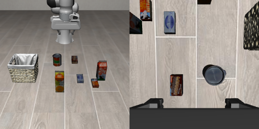
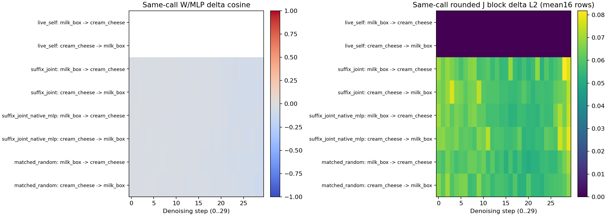

Cosmos3 · 抓错目标的诊断实验
说“抓牛奶”，为什么抓了奶酪盒？
我们在找原因，还没有找到稳定有效的修复方案。
问题是什么？
桌上有牛奶和奶酪盒。我们说：“抓牛奶。”
它有时抓对；但换一种摆放方式，它就去抓奶酪盒了。
我们想知道：为什么它没有按指定的物体去抓？
目前怎样查原因？
- 找一次它会抓错的情况。
- 保持起始画面和指令相同。
- 只改变模型内部的一处计算，再让机械臂执行。
- 看它是否从抓奶酪改成抓牛奶。
这样，才能把抓取结果的变化与这处内部计算联系起来。
这次实际改了什么？
模型内部既处理眼前画面，也计算未来画面。
我们的怀疑是：计算未来画面那部分传来的信息，可能影响了它选目标。
所以，暂时屏蔽这部分向当前画面部分传递信息的一组连接，再看它抓谁。
结果是什么？
有些情况改抓牛奶了，另一些仍抓错。
屏蔽后行为发生变化是已观察到的结果；“未来画面的信息影响目标选择”仍是待检验的解释。
查看其他实验、执行视频与技术细节
下面保留已有研究记录，包含另一次“末层换文字”实验；它与上面屏蔽连接的实验不同。
核对完整单层图、真实数组和计算来源
真实数字，沿着同一项看
来自已有原生运行的第1次去噪、第1层：当前画面第1个位置，4096个数中的第4项。这是计算示例，不是最新第36层干预的数值。
| 计算到哪里 | 实际保存值 |
|---|---|
| 进入本层 x | −0.109375 |
| Attention更新量 | −0.515625 |
| 第一次相加 r | −0.625000 |
| MLP更新量 | ＋0.083008 |
| 第二次相加：本层输出 | −0.542969 |
Attention和MLP使用整串向量计算，表里只抽出同一项。两次加法已用保存数组逐项核验；末行包含模型内部BF16精度的舍入。
照片没变，网络对照片的内部表示变了。这一个数字不是“牛奶概率”，也不是距离。它只是整个表示中的一个分量。
同一层各位置读取的是进入本层时的状态，再分别更新。动作位置不会先等本层画面位置更新完，再读取它的新状态；更新后的画面信息可在下一层被读取。
查看这组数字的来源与精确值
已有抓包：V195_A195_native / t00-L00.pt。取 propagation 中各张量的 [0, 3]；每张量形状为 50 × 4096。真实捕获与残差核验代码。
原值 −0.109375；Attention更新量 −0.515625；第一次相加 −0.625；MLP更新量 ＋0.0830078125；本层输出 −0.54296875。实际关系：r = BF16(x + Attention更新量)，输出 = BF16(r + MLP更新量)。MLP输入还经过归一化，简图中略去。
这里只读取已有数组，没有重新跑模型、训练或机械臂。最新实验是在第36层的动作位置替换文字读取，再比较正常与固定MLP响应，结果见下方内部实验。
1. 猜了什么？怎样试？
猜想是：末层读到另一目标后，后面的MLP会不会把变化抵消，让它坚持原来的动作？MLP就是这一层注意力之后的另一段计算。
先选同一初态下确实能“说牛奶抓牛奶、说奶酪抓奶酪”的配对案例。牛奶已移15厘米；使用 milk box 和 cream cheese 两种同长度名称，未来噪声198、动作噪声195。它们提供两份真实的文字状态。
视觉／动作状态保留→第36层：让16个动作位置
读取另一指令的文字数组→MLP照常更新
或保持同输入原输出→输出真实动作
交给MuJoCo
“固定MLP”指的是：保持它在这次相同输入、未换文字情况下的输出，而不是拿旧轨迹的数组硬塞进去。这样检验它对文字替换的响应是不是关键。
查看这批实际输入与干预范围

两句指令分别是 pick up the milk box and place it in the basket 和 pick up the cream cheese and place it in the basket，各11个prompt token。本轮不是移入完整“牛奶概念”，而是替换这一接口的真实文字数组。
首轮30次去噪全程干预，生成16步动作；之后7轮按原指令正常推理，每条共执行128步。因此，结果只检验这段首轮、末层局部干预的充分性。随机对照只匹配投影W之前的实际BF16变化强度，投影后强度未完全相同。
2. 机械臂实际抓谁？
两个方向都做了：牛奶指令读奶酪文字，奶酪指令读牛奶文字。各加自身替换、固定MLP和随机方向对照，8条全部执行，没有挑视频。
| 内部怎样改 | 原指令：牛奶盒 | 原指令：奶酪盒 |
|---|---|---|
| 自身替换对照 | 牛奶 · 64–68 | 奶酪盒 · 67–71 |
| 换另一指令的文字数组 | 牛奶 · 64–68 | 奶酪盒 · 67–71 |
| 换文字＋固定同输入的MLP响应 | 牛奶 · 64–68 | 奶酪盒 · 67–71 |
| 随机方向对照 | 牛奶 · 64–68 | 奶酪盒 · 67–71 |
全都仍抓原指令的目标。替换文字没有让它换目标，固定MLP响应也没有。表内数字是首次满足抓起标准的连续记录窗口，不是成功率。
一次只播放一条真实MuJoCo录像。“抓起”要求双侧指垫接触、抬高超过2厘米并连续5条记录。这8条都没有满足完整放篮任务判据；不要把抓起说成任务成功。
3. 内部到底发生了什么？
改动进去了，而且经过MLP后没有简单消失。我们保存了注意力、MLP及最终输出等真实数组，并用它们重建核对残差相加。
| 首个去噪时刻的替换方向 | 注意力变化与MLP变化的方向关系 | 两段变化相加后的长度 相对注意力变化 |
|---|---|---|
| 牛奶盒 → 奶酪盒 | -0.035 | 2.17 倍 |
| 奶酪盒 → 牛奶盒 | -0.043 | 2.13 倍 |
方向数值−1表示完全反向，0表示垂直，+1表示同向。本次接近0；两段相加后的变化更大。不像“MLP把文字变化原样反向抹掉”那么简单。
但变化更大不代表更懂牛奶。这些数值只是数组的方向和长度，尚不能读成“牛奶想法”或“奶酪想法”。实际抓取没有切换，才是这轮假设未通过的关键证据。
展开真实热力图与精确核验

上表只取首个去噪时刻：正常MLP与固定MLP两种执行的输入、原生／替换注意力输出、两种MLP输出和pre-W端点，两方向均逐字节匹配。后续输入会沿各自轨迹改变，不能把整段跨轨迹差异当成完全相同输入的比较。
实际舍入后的层输出变化，牛奶→奶酪为0.069892，固定MLP后为0.049843；反方向为0.066869和0.045681。均为首时刻16个动作位置的平均L2，无物理单位。余弦表用全部位置联合计算；加和长度表未包含BF16残差舍入，实际舍入另存数组。
核验240处真实捕获、64份预测记录、1024条官方动作转换、49对后续整份噪声。自身替换两条的整段机械臂状态和控制输入与自然参考逐字节一致。分析在CPU上进行，没有重新生成模型输出。
4. 哪一步往前走了，哪一步还没做到？
没做到：还没找到原始失败由哪个head、哪段MLP或哪个去噪时刻造成；没定位出语言区／运动区；也没证明它背了训练动作。
下一步只问一个问题：目标选择是否在更早的层已经稳定，导致最后一层的局部改动太晚？这是待验证的猜想，要用更早层的替换和真实执行检查，随后回到原始“milk／15厘米”失败。不能凭这一轮直接下结论。